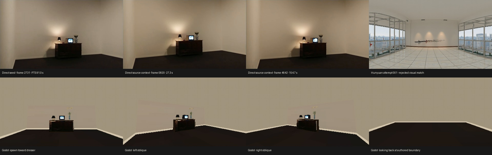

Bill Viola · one-room PSX candidate
Visually accepted by the operator. This is an authored playable room based on direct source frames. Its dimensions and unseen boundaries are design choices; scale and registration remain uncalibrated, and catalog admission remains pending.
Source and candidate comparison

Walkthrough
Launch from the workspace root:
godot4 --path godot_walk res://source_library/sources/video-b9161c467ed2d30a/rooms/bill-viola-single-room-v1/room.tscnWASD walks, mouse looks, Escape releases the mouse, and R resets to the spawn facing the dresser.
Godot review captures


Source references and authored proposal


The panorama is shown as a rejected mismatch and did not provide the room appearance. Source images are direct video frames; crop assets are direct rectangular crops without resizing or color edits.
Validation and measurements
- 225/225 floor support probes; four boundaries and dresser collider verified.
- Walk/reset passed; missing-floor and open-boundary negative controls passed.
- Godot 4.6.3 capture: 47.287 ms scene ready; mean 4.165 ms, p95 4.385 ms, p99 4.780 ms across 300 frames.
- Peak child RSS 549 MB; peak GPU use 897 MB (187 MB over capture start).
The original report is preserved as submitted before review; OPERATOR_APPROVAL.md records the later decision. Static contract checks and runtime evidence are separate. The room is visually accepted but not catalog-admitted; no opening or connector is claimed. See the report for source uncertainty and the rejected Hunyuan result.